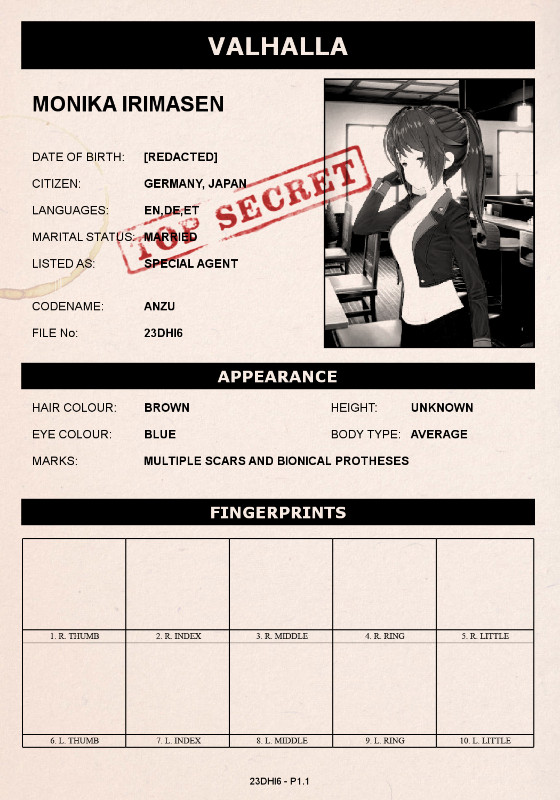

Valhalla CEO Monika Irimasen
All Valhalla personnel mention that CEO Irimasen displays protective traits and will risk her own life to provide safety to her employees. It has been determined that CEO Irimasen, as a matter of fact, values the lives of Valhalla staff members above her own. The latest events could have caused a few minor changes to her mental state, although the core notes of this psychological evaluation still stand correct.
CEO Irimasen has been heavily injured during a resue operation of ShadowHalla operators. Some of her bionics had to be replaced and chunks of her body need to recover from heavy burning. Another thing to point out is that her natural arm needed to be sewn back to her body after being severed during the incident.